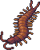

Angel Benlet

a sweet angel. despite its looks, gets into trouble.
hobby: lockpicking
likes: chocolate chip cookies
flying ability: poor

a little devil. despite its looks, it is very devoted.
hobby: midair stunts
likes: bitter flavors
special skill: tail whip

has beautiful glittering scales, but still looks a bit like a fried shrimp.
hobby: modeling
likes: habachi
beauty: incredible

a head above the rest. would be able to open doors, if it had any arms.
hobby: walking
likes: leg braces
kick level: 9001

chubby and easy to love.
hobby: loafing around
likes: peanut butter
heft: 50 kilos

enjoys hiding in enclosed spaces. easy to keep track of.
hobby: ship in a bottle
likes: mason jars
feng shui: wood

has a graceful nature. good with other animals.
hobby: ballet
likes: stockings
legs: yes

has legs, but cannot walk on them.
hobby: plastic scooter racing
likes: gym class
talent: shadow puppets

legs are semi-reliable, but still prefers to sit most of the time.
hobby: puzzles
likes: rubix cube
iq: 2

has an odd body. needs a lot of attention and encouragement.
hobby: snuggling
likes: bouncy balls
strangeness rating: 24

can see
hobby: voyeurism
likes: staring
sees you: yes

uses its long arms to crawl around. looks scary, but is as harmless as any benlet.
hobby: arm wrestling
likes: pull-ups
grip strength: 16 lbs

has a sweet nature, but hides a proclivity for risk and danger.
hobby: fashion
likes: pork cutlets
favorite place: red light district

always wearing socks, but is a bit too small for them.
hobby: knitting
likes: pastels
preferred fabric: fleece

the rootinest tootinest cowboy that ever was! (is just playing pretend, but you should play along.)
hobby: hunting outlaws
likes: sasparilla
favorite movie: true grit

not sure where this one came from.
hobby: crawling
likes: dark crevices
diet: carnivorous

needs a lot to eat. keep away from spider benlet, and do not touch the spines on its back.
hobby: consuming
likes: fiber
venom: incredibly painful

this benlet is in the middle of producing new clonal offspring.
hobby: taking a stroll
likes: blueberries
quote: \"someon's gotsta do it!\"

obstensibly a diety, but is just as helpless as any benlet.
hobby: answering prayers
likes: gold and pearls
length: 5000ft

has a thick coat of fur to protect it from the cold. needs grooming, and sheds a lot.
hobby: hairball
likes: being brushed
contest rating: best in show

this benlet suffers some health problems because of its breed. please treat it gently.
hobby: waddling
likes: strawberry milk
speed: 1ft per hr

surprisingly good at supporting itself. interested in whatever you're doing.
hobby: cleaning bathrooms
likes: afternoon television
balancing skill: quite good!

strongly resembles itemlabel's peepy. abdomen is purely for show.
hobby: crime
likes: almond crackers
stealth: 5

this benlet's eyes are crooked, and it seems to be a little tired. you should build it a nice bed.
hobby: walking into walls
likes: sheets fresh from dryer
vision: poor

benlets are very attentive to their babies. they are bonded, and should be adopted together.
hobby: school chaperone
likes: field trip
dream: healthy baby
 Kittenlet
Kittenlet
a rare variety of benlet, kittenlets have catlike features. they are active and playful.
hobby: chasing mice
likes: wet food
favorite toy: feather on a string

this benlet is looking for someone to play with. or maybe it's just itchy.
hobby: mancala
likes: shag carpet
talent: spinning w/o getting dizzy

his benlet has a calico pattern!
hobby: biting
likes: catnip mouse
special skill: 1ft leap

wanted to be a professional nudist, but doesn't have anything down there to work with.
hobby: protesting
dislikes: clothing
crime stamps: 1

this benlet has been forcibly clothed. it keeps running around, though.
hobby: 5km run
likes: energy drinks
record: 25th place

this kittenlet seems \"angy\"
hobby: crochet
likes: sandwich with no crust
status: growling

this benlet is a bit larger than the others.
hobby: hang gliding
likes: apricot
talent: can touch its toes

proudly steps where others dare not tread.
hobby: hopskotch
likes: capri sun
special skill: stand on one foot

this benlet seems to have forgotten its beans.
hobby: laying around
likes: video games
life goals: none

this benlet seems a bit off.
hobby: waterskipping
likes: mayflies
bouyancy: 12

this benlet seems a bit wierd.
hobby: paperclips
likes: roll cake
trippability: 54

this benlet seems a bit peculiar.
hobby: numbers stations
likes: tv static
talent: perfect rhythm

this benlet seems a bit strange.
hobby: headstands
likes: library
knowledge: immense

this benlet seems a bit unusual.
hobby: ufo spotting
likes: wandering at night
encounters: 3

this benlet seems a bit different.
hobby: alphabet
likes: silly straws
reading level: preschool

this benlet makes you crave... something.
hobby: toy collecting
likes: chicken nuggets
swagger: medium-high

a benlet with a leaf sticking out of its helmet.
hobby: carrying things
likes: sap
favorite season: summer

this benmin has bloomed! its flower is soft and round.
hobby: sunning itself
likes: breaking rocks
favorite food: honey

this benmin has a rather large leaf.
hobby: slapping
likes: violence
favorite tv show: wrestling

this large benlet peers around curiously.
hobby: devil sticks
likes: cookie bark
favorite music genre: ska

its limbs are utterly useless at dragging around its bulbous body.
hobby: spiderwatching
likes: slapping
wet: yes

you're not sure how it can support itself...
hobby: piemaking
likes: jelly beans
trophies: 4

featured with a friend.
hobby: that's private
likes: that's private
applicants: 40

these two seem to have a symbiotic realtionship.
hobbies: smoochin
likes: minions
love meter: 89 (lovely pair)
Sittin Beny

its large eyes have a disarming effect.
hobby: crying
likes: ice cream
culpability: none

it is sitting very still... is it even alive?
hobby: conspiracy
likes: mochi
things seen: too many

seems to have forgotten its hat.
hobby: hair care
likes: caramel
magazine subscriptions: 5

not very good at getting around on its own, but likes to sit in your lap.
hobby: rolling
likes: warmth
forgivable: yes

this beny likes to sing, but its song doesn't mean anything.
hobby: emotional counseling
likes: goop
singing ability: unmatched

no matter what you do, you cannot seem to make this one smile.
hobby: soap operas
likes: churros
vulnerability: high

really?
hobby: comedy
likes: wayneradiotv
tolerance: 64 psi

its eyes keep following you around the room...
hobby: costuming
likes: tulips
flavor: sour

you can barely see its legs under its helmet.
hobby: headbutting
likes: breaking ankles
durability: 75

this beny wavers in the wind.
hobby: kite flying
likes: weather reports
accuracy: 60%

it can't seem to settle its nerves.
hobby: boogieboarding
likes: a cool day
special skill: cry for hours

it won't look at you, and keeps stomping around...
hobby: throwing a fit
likes: watermelon candy
satisfaction: low

runs faster than you can catch it!
hobby: 100 meter dash
likes: electrolytes
hp: 2

wiggles in place like its got something to say.
hobby: origami
likes: saturday cartoons
dream: art school

floats around listlessly.
hobby: drifting
likes: sea breeze
favorite music genre: city pop

it stubbornly refuses your attempts to roll it over.
hobby: pouting
likes: treats
favorite holiday: halloween
 Doodle Beny #10
Doodle Beny #10
lurks in shadowy corners and peeks out at you...
hobby: interpretive dance
likes: marshmallow
tensile strength: poor

seems dissatisfied with something...
hobby: jello molds
likes: weed
gabu: beebo

wobbles around.
hobby: incubating
likes: calcium
vitality: 15

tromps about.
hobby: helmets
likes: tromping
durability: 18
The True Benlet

acts just like the rest of them, but its appearance makes you uneasy...
hobby: vhs tapes
likes: following
needs: to be held without fear

a gashapon figure.
hobby: rising
likes: yeast
manufacturer: qualia

a gashapon figure.
hobby: hiding
likes: staying dry
manufacturer: epoch

a gashapon figure.
hobby: sitting
likes: not thinking
manufacturer: Bandai
 Fishman
Fishman
a gashapon figure.
hobby: model submarines
likes: wet
manufacturer: Bandai

Gray Rat

it sits and sniffs at the air.
hobby: sniffing
likes: sunflower seeds
needs: patience

gets into places it should not be.
hobby: gnawing
likes: dried mango
needs: duct tape

calmly waits for your attention.
hobby: sleeping
likes: you
needs: love

has small, downturned ears
hobby: computer
likes: plastic
needs: milk
 Spotted Mouse
Spotted Mouse
flattens itself
hobby: laying down
likes: flax
needs: pets

so small...
hobby: dreaming
likes: lavender
needs: a nap
Centipede

Carnivorous myriapods with one leg per body segment and an adapted paor of legs for pincering prey.
hobby: waiting

Animals from the phylum Onychophora.
hobby: slime

A phylum of microscopic extremophile animals.
hobby: paddling

An order of gastropods with a wide variety of colors and shapes.
hobby: watercolors

Planarians of the genus Bipalium.
hobby: mucus

An extinct genus of radiodont.
hobby: eating

An extinct lobe-finned fish with amphibious attributes that make it an important transition fossil.
hobby: waddling

A savannah predator that strikes at snakes and other small animals with its long legs.
hobby: kicking

A large bird with a distinctive bill and severe gaze.
hobby: croaking

The closest extant relative of the giraffe.
hobby: rainforest

This is just some pants.
hobby: none
 Manticore
Manticore
A vicious, lionine beast with the face of a man and the tail of a scorpion.
hobby: killing

Gordon (hampter)

fucking hammer
hobby: hamster wheel
likes: grains
lifespan: 2 years

sweaty and nervous. he talks a little too much, and seems kind of helpless.
hobby: youtube videos
likes: being picked up
anxiety level: extreme

without a parent to guide them, they seem to have bonded to a gordlet instead.
hobby: growing
likes: milk
age: 1
Gordlet

stoic and unassuming.
hobby: science
likes: bugs
volume: silent

got a job as an emote.
hobby: websites
likes: pixels
dependability: A+

talks a lot, however, it has nothing of value to say.
hobby: bitching
likes: big guns
crime stamps: 89
Gordlet (Egg)

a growing egg... it pulses gently.
hobby: waiting
likes: peace
potential: 86
 Gordlet (Newt)
Gordlet (Newt)
has passed the trials of infancy, and absorbed its tail. it has yet to grow legs.
hobby: crawling
likes: slime
maturity: getting there
Gordog

loves you. will always be there for you no matter what.
hobby: doing tricks
likes: doggy treat
special skill: hold your hand
Cubivore

A strange creature with an endless appetite.
hobby: eating
likes: meat
limbs: one
Nick Valentine

what's this guy doing here...
hobby: solving crimes
likes: trenchcoat
voltage: 5.6 V